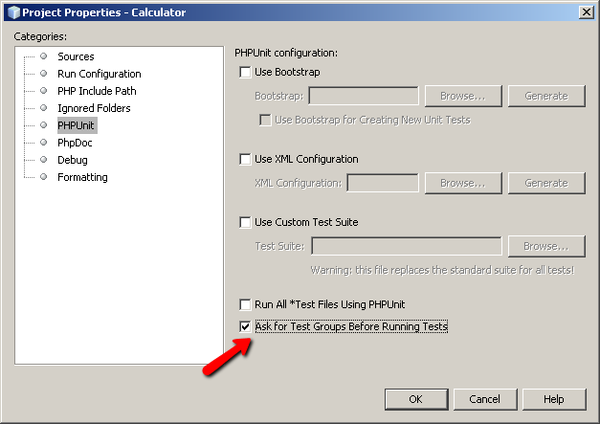

PHPUnit と Selenium を使用したテスト
NetBeans IDE for PHP は、PHPUnit 自動化テストをサポートしています。PHPUnit によって、NetBeans IDE で、IDE が Python に提供するコードカバレージと同じように、PHP のコードカバレージが提供されるようになりました。テストの出力は、IDE の JUnit および Python のテストランナーが使用するものと同じ、機能が豊富な出力ウィンドウに表示されます。
NetBeans IDE では、PHPUnit に加えて、Selenium の移植可能なテストフレームワークもサポートされています。Selenium プラグインは、アップデートセンターから入手できます。このプラグインをインストールすると、Selenium サーバーが IDE の登録済みサーバーに追加され、Selenium のテストオプションが PHP のメニューに追加されます。
目次

このチュートリアルに従うには、次のソフトウェアとリソースが必要です。
| NetBeans IDE |
PHP ダウンロードバンドル |
| PEAR を含む PHP エンジン |
version 5。 |
| Web サーバー |
Apache HTTP Server 2.2 (推奨)
|
| PHPUnit |
version 3.3.0 以上 |
PHPUnit のインストール
PHPUnit は、PHPUnit のドキュメントに従って、PEAR を使用してインストールします。PHPUnit version 3.3.0 以上をインストールします。特別な設定は不要です。PHPUnit がインストールされたら、NetBeans で認識されます。PHP エンジンとともに PEAR がインストールされている必要があります。また、PHPUnit のドキュメントには、PHPUnit が通常はローカルの PEAR ディレクトリにインストールされると記載されています。ドキュメントにはパス /usr/lib/php/PHPUnit とありますが、XAMPP for Windows では XAMPP_HOME\php\PEAR\PHPUnit になります。
NetBeans IDE で PHPUnit のインストールが認識されているかどうかを確認するには、「ツール」>「オプション」(Mac の場合は「NetBeans」>「環境設定」) を開き、PHP ウィンドウを確認します。「単体テスト」タブを開きます。「PHPUnit スクリプト」フィールドに、PHPUnit スクリプトのパスが表示されます。スクリプトが表示されない場合は、参照します。

PHPUnit テストの作成と実行
NetBeans IDE では、ファイル内のすべての PHP クラスに対する PHPUnit テストを作成し、実行できます。テストジェネレータが正常に動作するように、PHP ファイルは、ファイル内の最初のクラスと同じ名前にします。
クラスの PHPUnit テストを作成して実行するには、次の手順に従います。
- Calculator という PHP プロジェクトを作成します。このプロジェクトに calculator.php というファイルを作成します。このファイルに、PHPUnit のドキュメントのスケルトンジェネレータの章にある Calculator クラスを入力するか、ペーストします。
<?php
class Calculator
{
public function add($a, $b)
{
return $a + $b;
}
}
?>
- @assert 注釈と、入力と出力の例を使用したコメントブロックを追加します。この例には間違った表明が 1 つ含まれています。
<?php
class Calculator
{
/**
* @assert (0, 0) == 0
* @assert (0, 1) == 1
* @assert (1, 0) == 1
* @assert (1, 1) == 2
* @assert (1, 2) == 4
*/
public function add($a, $b)
{
return $a + $b;
}
}
?>
- 「プロジェクト」ウィンドウで「Calculator.php」ノードを右クリックし、「ツール」>「PHPUnit テストを作成」を選択します。「ソースファイル」ノードのコンテキストメニューで、プロジェクト内のすべてのファイルのテストを作成できます。

- テストをはじめて作成するときは、テストファイルを保存するディレクトリを指定するダイアログが開きます。この例では、参照機能を使用して tests ディレクトリを作成しています。

- IDE によって、CalculatorTest.php というファイルに、スケルトンテストクラスが生成されます。このファイルは、「プロジェクト」ウィンドウに表示され、エディタで開きます。

@assert 注釈ごとにテストが作成されます。
/**
* @assert (1, 1) == 2 から生成
*/
public function testAdd4()
{
$this->assertEquals(
2,
$this->object->add(1, 1)
);
}
- 1 つのファイルまたはプロジェクト全体をテストできます。プロジェクトをテストするには、プロジェクトの親ノードを右クリックして「テスト」を選択するか、Alt-F6 キーを押します。Calculator.php ファイルをテストするには、ファイルのノードを右クリックして「テスト」を選択するか、Ctrl-F6/⌘-F6 キーを押します。この例は、1 つのファイルに 1 つのクラスがあるだけなので、結果は同じです。IDE によってテストが実行され、「テスト結果」ウィンドウに結果が表示されます。

より詳細なテキストバージョンの結果が「出力」ウィンドウに表示されます。

テストグループの使用
NetBeans IDE version 7.1 以降では、PHPUnit テストグループを使用できます。テストスイートを実行するとき、実行するテストのグループを選択できます。たとえば、一部のテストは本稼働環境でのみ実行し、ほかのテストは本稼働環境と開発環境の両方で実行する場合があります。前者のテストを production グループに配置し、後者のテストを production グループと development グループの両方に配置します。テストスイートを開発環境で実行する場合、development テストグループのみ実行することを選択します。
PHP プロジェクト内の任意のファイルについてテストグループを使用するには、そのプロジェクトでテストグループを有効にする必要があります。
テストグループの一部としてテストをマークするには、テストメソッドに @group [group name] の注釈を付けます。
テストグループを作成および実行するには、次を実行します。
- 「プロジェクト」ウィンドウで「Calculator」ノードを右クリックし、「プロパティー」を選択します。「プロジェクトプロパティー」が開きます。
- 「プロジェクトプロパティー」で「PHPUnit」カテゴリを選択します。「テストの実行前にテストグループの入力を求める」を選択します。「了解」をクリックします。

- エディタで CalculatorTest.php を開きます。
- メソッド testAdd、testAdd3、および testAdd5 について、注釈 @group production を追加します。

- メソッド testAdd2 および testAdd4 について、注釈 @group production および @group development を追加します。

- Calculator.php ノードを右クリックし、「テスト」を選択します。ダイアログが開き、実行するテストグループを尋ねます。「development」を選択して「了解」をクリックします。IDE は、@group development という注釈が付いたテストのみを実行します。

NetBeans IDE の PHPUnit テストグループの詳細については、NetBeans IDE for PHP ブログの投稿「Using PHP Unit Test Groups」を参照してください。
テスト結果と IDE 出力
PHPUnit のテスト結果は、IDE の「テスト結果」と「出力」の 2 つのウィンドウに表示されます。「テスト結果」ウィンドウには、グラフィック区画と簡単なテキストの区画があります。「出力」ウィンドウには、より詳細なテキストバージョンの出力が表示されます。ここでは、「テスト結果」ウィンドウと「出力」ウィンドウについて詳しく説明します。
「テスト結果」ウィンドウでは、次の場所で、不合格だったテストに関する情報を確認できます。
- UI 区画内で、不合格だったテストのツリー項目に関連付けられているメッセージ
- 右側の区画内のテキスト (不合格だったテストコード行へのリンクを含む)
- UI 区画内で、不合格だったテストの上にカーソルを置くと表示されるツールチップのテキスト

「テスト結果」ウィンドウの左側には次のボタンがあります。
- テストの再実行

- 失敗したテストの表示

- 成功したテストの表示

- 成功したがエラーがあるテストの表示

- 次のテスト結果
 または前のテスト結果
または前のテスト結果 の表示の移動
の表示の移動
「出力」ウィンドウには、PHPUnit スクリプトの完全な出力が表示されます。「テスト結果」ウィンドウ内の情報ではエラーの原因を特定できない場合に便利です。「テスト結果」ウィンドウと同様に、「出力」ウィンドウには、不合格だったテストクラス行へのリンクが含まれます。また、テストを再実行したり、PHP の「オプション」ウィンドウを開いたりするためのボタンが左側にあります。
コードカバレージ
NetBeans IDE for PHP には、PHPUnit のサポートとともにコードカバレージがあります (IDE には、Python のコードカバレージもあります)。コードカバレージでは、すべてのメソッドが PHPUnit テストでカバーされるかどうかが確認されます。ここでは、既存の Calculator クラスでコードカバレージがどのように機能するかについて説明します。
コードカバレージを使用するには、次の手順に従います。
- Calculator.php を開き、add2 という add 関数の複製を追加します。Calculator クラスは次のようになります。
<?php
class Calculator {
/**
* @assert (0, 0) == 0
* @assert (0, 1) == 1
* @assert (1, 0) == 1
* @assert (1, 1) == 2
* @assert (1, 2) == 4
*/
public function add($a, $b) {
return $a + $b;
}
public function add2($a, $b) {
return $a + $b;
}
}
?>
- プロジェクトノードを右クリックします。コンテキストメニューから、「コードカバレージ」>「コードカバレージを収集し表示」を選択します。デフォルトでは、「エディタバーを表示」も選択されています。

- エディタの最下部に、コードカバレージのエディタバーが表示されます。コードカバレージはテストされていないので、エディタバーには 0% のカバレージが表示されます。「消去」をクリックしてテスト結果を消去したあともこのように表示されます。

- 「テスト」をクリックして開いているファイルをテストするか、「すべてのテスト」をクリックしてプロジェクトのすべてのテストを実行します。テスト結果が表示されます。また、コードカバレージのバーが、テストでカバーされている実行可能コード文の割合 (パーセント) を示します。エディタウィンドウで、カバーされているコードは緑色で強調表示され、カバーされていないコードは赤で強調表示されます。
警告: add2 関数を追加したあとでテストファイルを再生成した場合、PHPUnit テストは実行されません。これは、PHPUnit が 2 つの競合する testAdd2 関数を作成するためです。このような複数の関数について PHPUnit を使用する場合、末尾に数字を付加することによって関数を区別しないでください。PHPUnit のドキュメントを参照してください。

- エディタバーで、「レポート...」をクリックします。コードカバレージのレポートが開き、プロジェクトに対して実行されたすべてのテストの結果が表示されます。レポート内のボタンを使用して、結果を消去したり、すべてのテストを再実行したり、コードカバレージを無効にしたり (「完了」をクリック) できます。

- プロジェクトに別のクラスを追加し、テストファイルを削除して再作成して、コードカバレージのレポートをもう一度確認できます。すると、新しいクラスが表示されます。次のレポートでは、Calculator クラスに、テストに含まれない関数がまたあります。

プロジェクト固有の構成の使用
IDE では、プロジェクトに次のカスタム構成を選択できます。
- ブートストラップファイル
- XML 構成ファイル
- テストスイート
プロジェクト固有の構成を設定するには、プロジェクトのノードまたはプロジェクトの「テストファイル」ノードを右クリックし、プロパティーを選択します。「プロパティー」ダイアログが開きます。PHPUnit カテゴリを選択します。カスタムのブートストラップ、XML 構成、またはテストスイートファイルを選択できるダイアログが開きます。これらのファイルの構造がわからない場合は、NetBeans IDE を使用してスケルトンを生成できます。

カスタムクラスローダーを使用するプロジェクトの場合、__autoload() 特殊関数の実装などによる、ブートストラップオプションが必要です。事前に、プロジェクトの複数のクラスで使用する大域定数を定義するファイルなどのファイルを含める必要がある場合も、ブートストラップオプションを使用します。
XML 構成ファイルを使用して、コマンド行の呼び出しに使用するオプションを定義することもできます。詳細については、PHPUnit マニュアルを参照してください。XML 構成ファイルを使用して、テストケースに php.ini 設定や大域変数を定義することもできます。XML 構成ファイルにブートストラップオプションを設定することもできます。
カスタムテストスイートを設定すると、「実行」>「プロジェクトをテスト」を選択するたびに、このスイートが実行されます。これは、テストのサブセットのみを実行する場合や、データプロバイダなど、手動で追加する必要がある PHPUnit の最近追加された機能を使用する場合に非常に便利です。
もちろん、テストスイートは必要な数だけ定義できます。また、プロジェクトエクスプローラでファイルを右クリックし、「実行」を選択すると、それらを個別に実行できます。
混乱を防ぐため、カスタムテストスイートを使用するときには、NetBeans から通知があります。通知は、テスト結果および出力ウィンドウで確認できます。
Selenium フレームワークでのテストの実行
Selenium は、Web アプリケーション用の移植可能なソフトウェアテスト用フレームワークです。テストは、HTML の表として記述したり、一般的なプログラミング言語でコーディングしたりでき、ほとんどの Web ブラウザで直接実行できます。Selenium は、Windows、Linux、および Macintosh に展開できます。詳細は、Selenium の Web サイトを参照してください。
NetBeans IDE には、Selenium サーバーを含むプラグインがあります。このプラグインを使用して、PHP、Web アプリケーション、または Maven プロジェクトに対して Selenium のテストを実行できます。PHP に対して Selenium のテストを実行するには、Testing Selenium パッケージを PHP エンジンにインストールする必要があります。
PHP に対して Selenium のテストを実行するには、次の手順に従います。
- コマンドプロンプトを開き、コマンド pear install Testing_Selenium-beta を実行します。パスに PHP_HOME/php/PEAR が含まれている必要があります。コマンドが正常に完了したら、プロンプトに install ok: channel://pear.php.net/Testing_Selenium-0.4.3 と表示されます。
- IDE で、「ツール」>「プラグイン」を開き、Selenium Module for PHP をインストールします。
- 「プロジェクト」ウィンドウで、Calculator プロジェクトのプロジェクトノードを右クリックします。「新規」>「その他」を選択します。「新規ファイル」ウィザードが開きます。「Selenium」を選択し、「次へ」をクリックします。

- Selenium のテストをはじめて作成するとき、Selenium のテストファイル用のディレクトリを設定するダイアログが開きます。このディレクトリは、PHPUnit のテストファイルとは別のディレクトリにします。別のディレクトリにしなかった場合、単体テストを実行するたびに Selenium のテストが実行されます。Selenium のような機能的なテストの実行は、単体テストの実行よりも時間がかかります。このため、単体テストを実行するたびに Selenium のテストが実行されることは避けたいはずです。
- 「名前と場所」ページの設定はデフォルトのままにし、「完了」をクリックします。Selenium の新しいテストファイルがエディタで開き、「プロジェクト」ウィンドウに表示されます。

- プロジェクトのコンテキストメニューに「Run Selenium Tests」という項目が追加されます。この項目をクリックすると、Selenium のテスト結果が、PHPUnit テストと同様に「テスト結果」ウィンドウに表示されます。
その他の課題
有益なアイデアをいくつか紹介します。
- Calculator.php に、たとえば $a と $b の積を求める Calculator2 クラスなどの 2 番目のクラスを追加します。テストを削除し、再生成します。
- 複数の部に分かれている 「CRUD アプリケーションの作成」のチュートリアルを試す場合は、最後のプロジェクトの Selenium テストを作成します。
users@php.netbeans.org メーリングリストに登録することによって、NetBeans IDE PHP 開発機能に関するご意見やご提案を送信したり、サポートを受けたり、最新の開発情報を入手したりできます。このリストは NetBeans IDE フォーラムにミラーがあります。
関連項目
NetBeans IDE での PHP のテストについての詳細は、次のリソースを参照してください。
PHP の学習に戻る